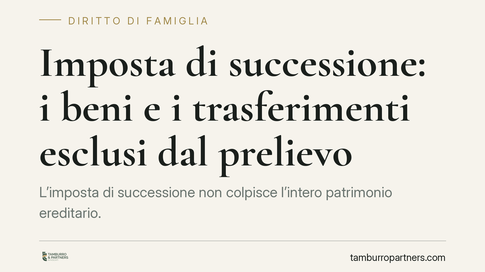

Imposta di successione: i beni e i trasferimenti esclusi dal prelievo
L'imposta di successione non colpisce l'intero patrimonio ereditario. Il Testo Unico esclude alcune categorie di beni e agevola specifici trasferimenti, dall'azienda di famiglia ai lasciti agli enti del Terzo settore. Conoscere questi margini è decisivo per pianificare la successione e per presentare una denuncia corretta, evitando sia errori di calcolo sia contestazioni dell'Agenzia delle Entrate.

Il quadro: un'imposta a geometria variabile
L'imposta di successione (D.lgs. 346/1990, il cosiddetto TUS) non si applica in modo uniforme a tutto ciò che cade in eredità. Il legislatore ha previsto esclusioni oggettive, che riguardano determinati beni, ed esenzioni soggettive o funzionali, legate alla qualità del beneficiario o alla destinazione del trasferimento.
La distinzione è importante: un bene *escluso* non concorre a formare l'attivo ereditario; un trasferimento *esente* entra nel calcolo ma non sconta imposta al ricorrere di precise condizioni. Confonderle è l'errore più frequente in sede di denuncia.
Le principali ipotesi previste dal TUS
Titoli del debito pubblico. L'art. 12, comma 1, lett. h) TUS esclude dall'attivo ereditario i titoli del debito pubblico, tra cui BOT e CCT, e gli altri titoli di Stato garantiti. Si tratta di un'esclusione circoscritta a queste categorie: non va estesa, in via generale, a qualsiasi strumento finanziario a connotazione pubblica. La verifica va fatta titolo per titolo.
Trasferimenti a Stato, enti pubblici e finalità di pubblica utilità. L'art. 3 TUS esenta i trasferimenti a favore dello Stato, delle Regioni, degli enti pubblici territoriali e di soggetti che perseguano finalità di pubblica utilità, assistenza, studio, ricerca o beneficenza.
Per gli enti del Terzo settore occorre però una precisazione. La loro disciplina fiscale non si esaurisce nell'art. 3 TUS: il Codice del Terzo settore (D.lgs. 117/2017) detta regole proprie in materia di imposte indirette e agevolazioni, non sempre coincidenti con quelle del TUS. Verificare la qualificazione dell'ente (ETS iscritto al RUNTS, ODV, APS, ONLUS in regime transitorio) è quindi passaggio preliminare e non secondario.
Passaggio generazionale dell'azienda. L'art. 3, comma 4-ter, TUS – introdotto dalla L. 296/2006 – esenta i trasferimenti, anche tramite patti di famiglia, di aziende e partecipazioni a favore dei discendenti e del coniuge.
L'agevolazione non è automatica. Per le partecipazioni in società di capitali è richiesto che il trasferimento consenta di acquisire o integrare il controllo ai sensi dell'art. 2359, primo comma, n. 1, c.c., ossia la maggioranza dei voti in assemblea ordinaria. Inoltre, il beneficiario deve proseguire l'attività d'impresa, o mantenere il controllo, per almeno cinque anni dal trasferimento, rendendo apposita dichiarazione. Il mancato rispetto dell'impegno quinquennale comporta la decadenza e il recupero dell'imposta.
Il nodo critico: la comunione *de residuo*
Un tema di frequente contenzioso riguarda la comunione *de residuo* tra coniugi in regime di comunione legale (artt. 177 e seguenti c.c.). Alla morte di un coniuge si pone il problema di quali beni rientrino nell'asse ereditario e in quale quota, con riflessi diretti sulla base imponibile.
La giurisprudenza di legittimità è intervenuta per chiarire la natura di questa comunione, in particolare con la pronuncia delle Sezioni Unite n. 15889/2022, che ne ha ricostruito il meccanismo (secondo l'orientamento prevalente, di tipo creditizio e non reale sui beni residui). Gli estremi delle ulteriori pronunce rilevanti per il singolo caso vanno verificati in relazione alla composizione concreta del patrimonio.
La qualificazione incide sul calcolo: valorizzare in modo errato la posizione del coniuge superstite può generare un'imposta non dovuta o, al contrario, una denuncia incompleta esposta a rettifica.
Cosa fare in concreto
- Classificare ogni bene distinguendo tra ipotesi di esclusione dall'attivo e ipotesi di esenzione del trasferimento, perché il trattamento in denuncia è diverso.
- Verificare titolo per titolo la natura degli strumenti finanziari, senza presumere l'esclusione di tutti i prodotti a connotazione pubblica.
- Per i lasciti a enti, accertare la qualificazione del beneficiario e la base normativa applicabile, distinguendo l'art. 3 TUS dal regime proprio del D.lgs. 117/2017.
- Nel passaggio d'azienda, documentare il requisito del controllo ex art. 2359 c.c. e predisporre la dichiarazione di impegno quinquennale, monitorandone il rispetto.
- In presenza di comunione legale, è opportuno far precedere la denuncia da una ricostruzione della comunione *de residuo* alla luce dell'orientamento di legittimità.
Disclaimer
Contributo informativo a cura di Tamburro & Partners - Avv. Giuseppe Tamburro. Non costituisce parere legale.
Ogni famiglia ha il suo equilibrio.
Separazione, divorzio, affidamento, assegno: se vuoi un confronto riservato su una specifica situazione, scrivi allo studio. Ti rispondiamo entro un giorno lavorativo.